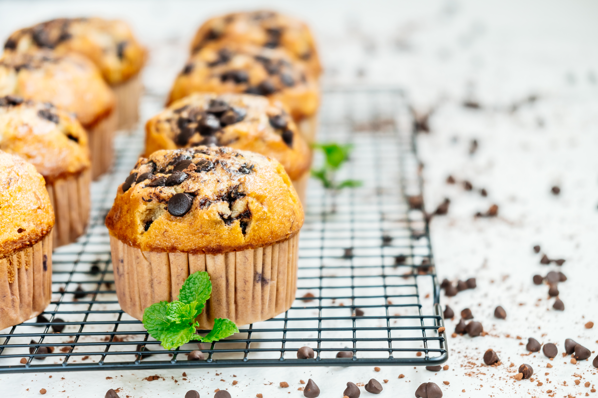

Chocolate Chip Muffins

Description
These moist zucchini muffins with chocolate chips are easy to rustle up in 30 minutes for a tasty addition to breakfast or brunch. They’re light, fluffy, and so delicious!
Ingredients
- 1 1/2 cups all-purpose flour
- 3/4 cup white sugar
- 1 teaspoon baking soda
- 1 teaspoon ground cinnamon
- 1/2 teaspoon salt
- 1/2 cup vegetable oil
- 1/4 cup milk
- 1 large egg, lightly beaten
- 1 tablespoon lemon juice
- 1 tablespoon vanilla extract
- 1 cup shredded zucchini
- 1/2 cup miniature semisweet chocolate chip
- 1/2 cup chopped walnuts
Directions
- Gather all ingredients
- Preheat the oven to 350 degrees F(175 degrees C). Grease as a 12-cup muffin tin or line cups with paper liners
- Combine flour, sugar, baking soda, cinnamon and salt in a large bowl
- whisk oil, milk, egg, lemon juice and vanilla extract in a separate bowl
- Stir oil mixture into flour mixture until just moistened; fold in zucchini, chocolate chips and walnuts
- Spoon batter into the prepared muffins cups, filling each 2/3 full
- Bake in the preheated oven until tops spring back when lightly pressed, about 20 to 25 minutes. Let muffins cool
in the tin briefly before transferring to a wire rack to cool completely
- Enjoy